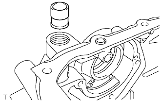

BƠM DẦU > KIỂM TRA |
| 1. KIỂM TRA VAN AN TOÀN CỦA BƠM DẦU |
|  |
Bôi dầu động cơ lên van an toàn và thả nó rơi vào lỗ của van an toàn.
Kiểm tra rằng van an toàn rơi xuống nhẹ nhàng bởi chính trọng lượng của nó.
Nếu không, hãy thay thế van an toàn. Nếu cần, hãy thay cả nắp xích cam.
| 2. KIỂM TRA BỘ RÔTO CỦA BƠM DẦU |
 |
Lắp các rôto vào thân bơm dầu với các dấu của rôto quay ra ngoài. Kiểm tra rằng các rôto quay êm.
Kiểm tra khe hở đỉnh răng.
Dùng thước lá, đo khe hở giữa đỉnh răng của rôto chủ động và bị động, như được chỉ ra trong hình vẽ.
Kiểm tra khe hở cạnh.
Dùng thước lá và thước thẳng, đo khe hở giữa các rôto và thước thẳng, như được chỉ ra trong hình vẽ.
Kiểm tra khe hở thân bơm.
Dùng thước lá, đo khe hở giữa thân bơm dầu và rôto bị động, như được chỉ ra trong hình vẽ.